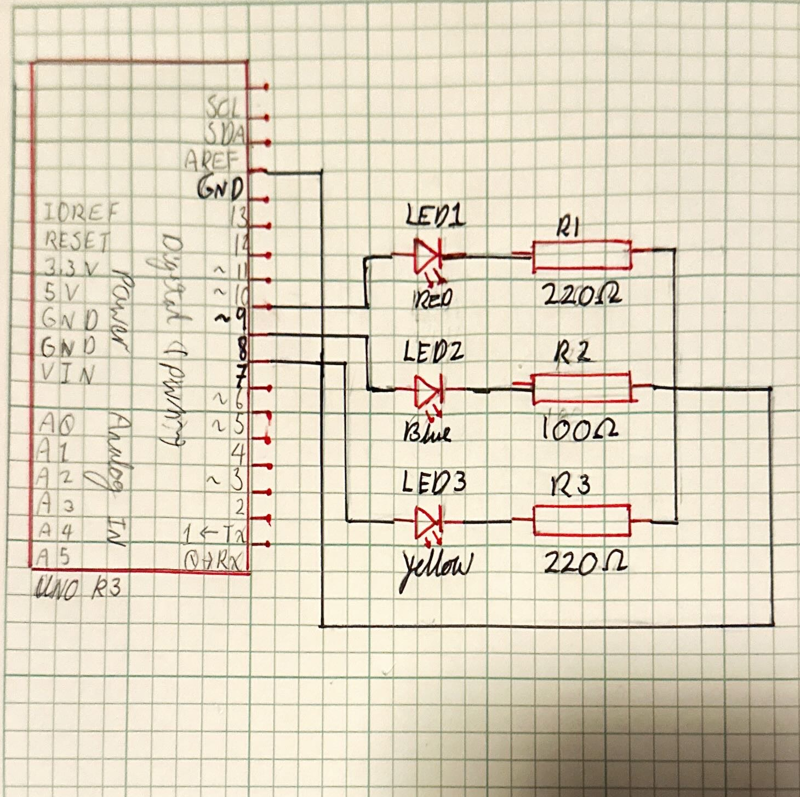
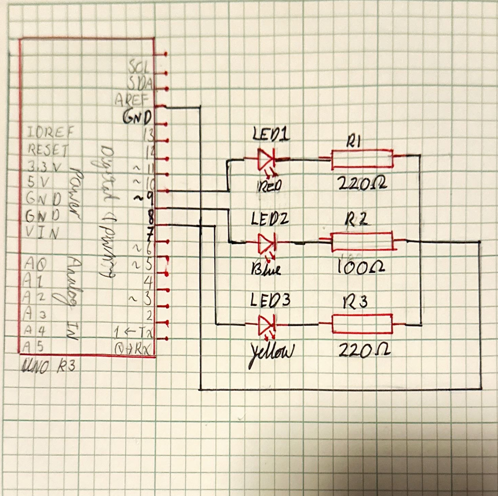
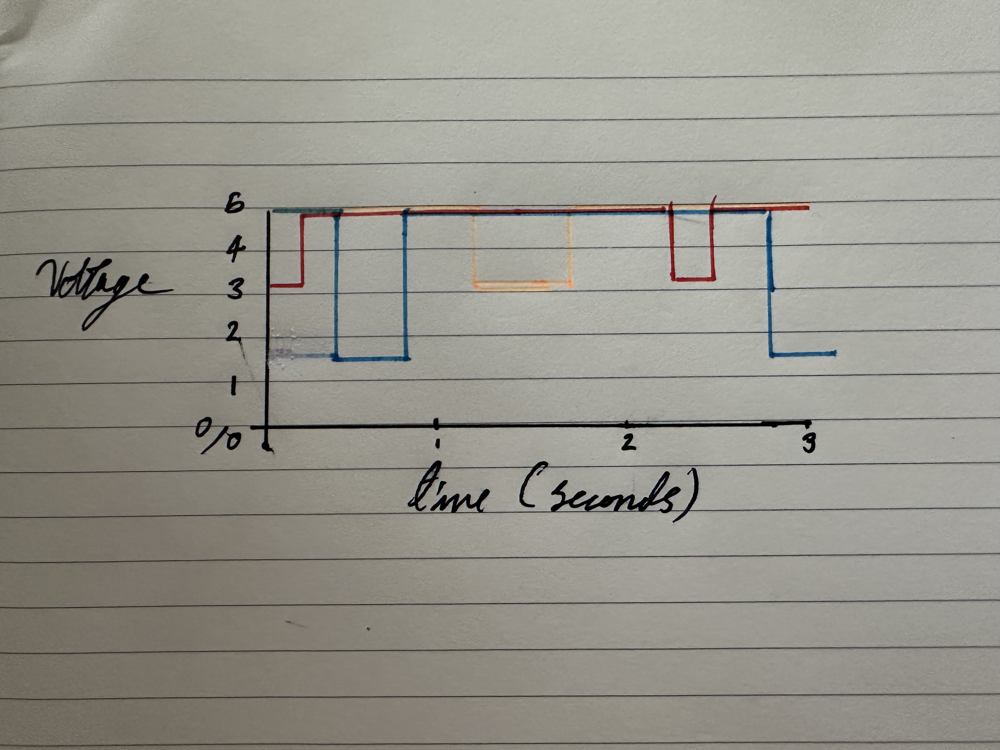

Skye's Assignment 1: Blink
 

The power for each LED is directly from the arduino and then given to the resistors before being linked to ground on the bread board with the white wires.
The Blue LED has a higher voltage drop thus to have the same current in all LEDS the blue LED needs to be paired with a lower resistor.
Code:
void setup() { // start of the container of the pins I want to initialize
pinMode(8, OUTPUT); // initializes digital pin 8
pinMode(7, OUTPUT); // initializes digital pin 7
void loop() { // start of the container of the code I want to repeat
delay(200); //waits 200 miliseconds for a quick blink effect
digitalWrite(9, LOW); // turns the red LED off
delay(200); //waits 200 miliseconds
digitalWrite(8, HIGH); //turns the blue LED on
delay(400); //waits 400 miliseconds for a medium long blink
digitalWrite(8, LOW); // turns the blue LED off
delay(400); //waits 400 miliseconds
digitalWrite(7, HIGH); //turns the yellow LED on
delay(600); //waits 600 miliseconds for a long blink effect
digitalWrite(7, LOW); // turns the yellow LED off
delay(600); //waits 600 miliseconds before looping
Questions:
1: Draw a graph where the X axis is time and the Y axis is voltage across the LEDs. Draw a line for each of your 3 LEDs.

2: How many LEDs could you blink independently with your Arduino? How much current would that draw?
14 LEDs could blink independently, one for each of the digital ports. The current would depend on what resistors are being used. However each LED would be experiencing idealy 20mA to be bright but still a good amount under the maximum rating DC forward current.
3: How many LEDs could you blink with your Arduino if only one were to be on at once? (this question is not required!)
4: How fast do you need to blink your LEDs until you no longer can tell that they are blinking?
Around 14 to 4 miliseconds between being on, I didn't test it out due to lights rapidly flashing being potentialy triggering. But I estimate this based of of 60 frames per second being used for video and moniters refresh rates being up to 240hz.